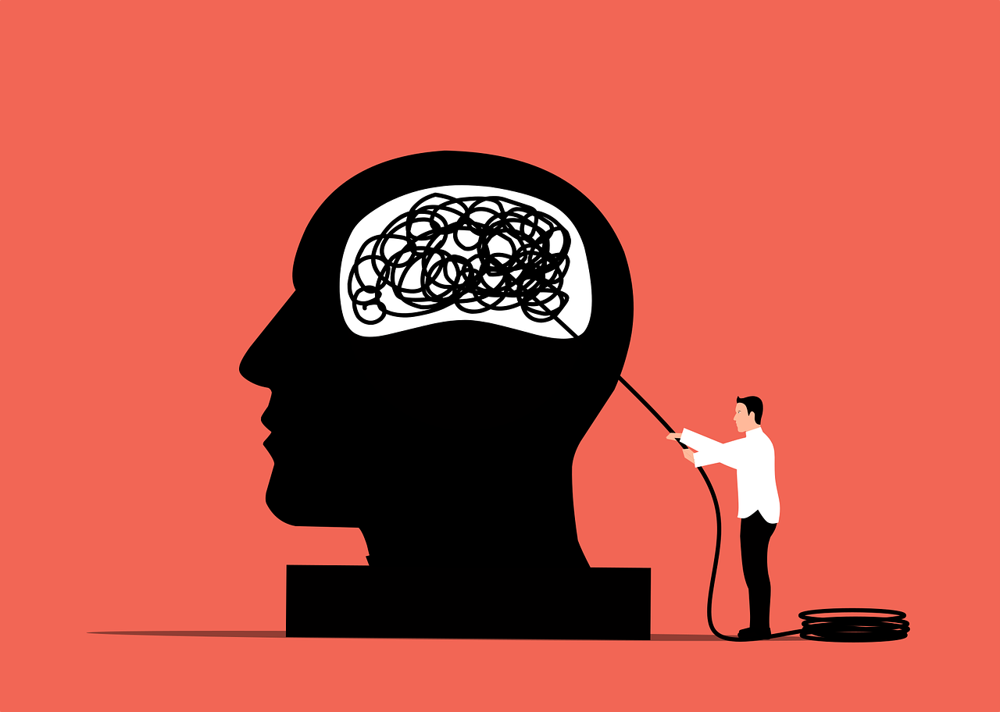
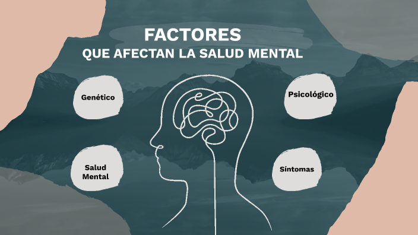

Salud y bienestar: Salud Mental

La salud mental es un estado de bienestar en el que la persona reconoce sus propias capacidades, puede afrontar las tensiones normales de la vida, trabajar de forma productiva y contribuir a su comunidad. No se trata únicamente de la ausencia de trastornos mentales, sino de un equilibrio emocional, psicológico y social que influye en cómo pensamos, sentimos y actuamos. Fuente: Organización Mundial de la Salud (OMS)
La salud mental es fundamental en todas las etapas de la vida, desde la infancia hasta la adultez. Influye en la manera en que manejamos el estrés, tomamos decisiones y nos relacionamos con los demás. Según la Organización Panamericana de la Salud (OPS), los trastornos mentales representan una de las principales causas de discapacidad en el mundo, afectando significativamente la calidad de vida de millones de personas.

La salud mental está determinada por múltiples factores sociales, biológicos y psicológicos. Experiencias como la violencia, el estrés prolongado, problemas económicos o situaciones de emergencia sanitaria pueden afectar el bienestar emocional. Asimismo, el apoyo familiar, la estabilidad laboral y el acceso a servicios de salud son elementos protectores importantes.
En los últimos años, especialmente tras la pandemia de COVID-19, los problemas relacionados con la ansiedad, la depresión y el estrés aumentaron considerablemente en todo el mundo. La OMS informó que los casos de ansiedad y depresión crecieron de forma notable, evidenciando la necesidad de fortalecer los sistemas de atención psicológica y promover estrategias de prevención y apoyo comunitario.

Cuidar la salud mental implica mantener hábitos saludables como una buena alimentación, actividad física regular, descanso adecuado y relaciones sociales positivas. También es importante buscar ayuda profesional cuando se presentan síntomas persistentes como tristeza profunda, ansiedad constante o cambios drásticos en el comportamiento. Promover una cultura de respeto, empatía y apoyo contribuye a construir una sociedad más consciente y emocionalmente saludable.